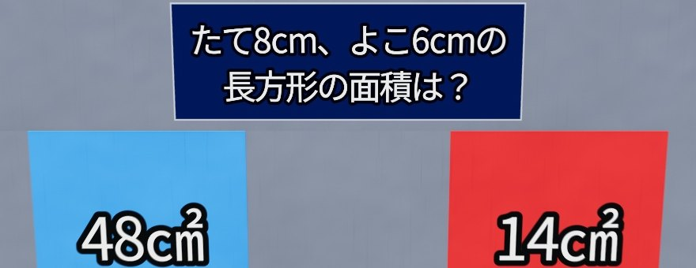
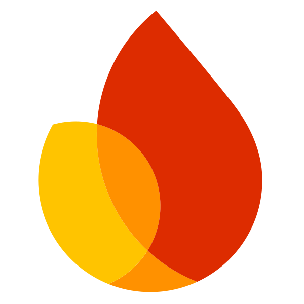

問題生成ラインその場でつくり、毎晩たしかめて、みんなに届ける
試合ごと
毎晩
学年・教科・難易度を選ぶ
新作は 10 問中 N 問
 Cloud Run
Cloud Run月の予算の進み具合で
新作の数 N を決める
AI の鍵はここだけ
Gemini 3.6 Flash
新作をつくる
143 単元の設計図で、
6 本同時に 24 候補
形式・重複・偏りを検査
正解を伏せて
Gemini が解き直す
出題（壁）

解説も AI が書く
つくった問題と
「良い・悪い」の評価を
通信の合間に送る
判定待ち
試合と補充の問題が並ぶ
「悪い」がつけばすぐ外し
「良い」が多い順に判定へ
Claude Opus 5.5
毎晩 4:00 判定
正解を伏せて解き直し、
合えば合格
これまでの合格率 89.1%

Firebaseいま 16,663 問
うち 4,456 問は試合から
変わった分を各端末へ
共有バンク → 端末の問題
→ 同梱の 12,601 問
AI が止まっても続く
見守る：自作の管理ソフト
費用・判定・在庫を毎分たしかめる。
端末のブロックや、問題の取り下げもここから
使わない
2,189 問
不合格や「悪い」の問題
Claude Haiku 5.5毎晩 3:00 補充
足りない区分（教科×学年×難易度）の問題をつくる
共有バンクの 12,207 問がここから
数字は 2026 年 11 月 1 日時点（自作の管理ソフトより）Gemini・Cloud Run・Firebase は Google LLC の、Claude は Anthropic, PBC の商標です